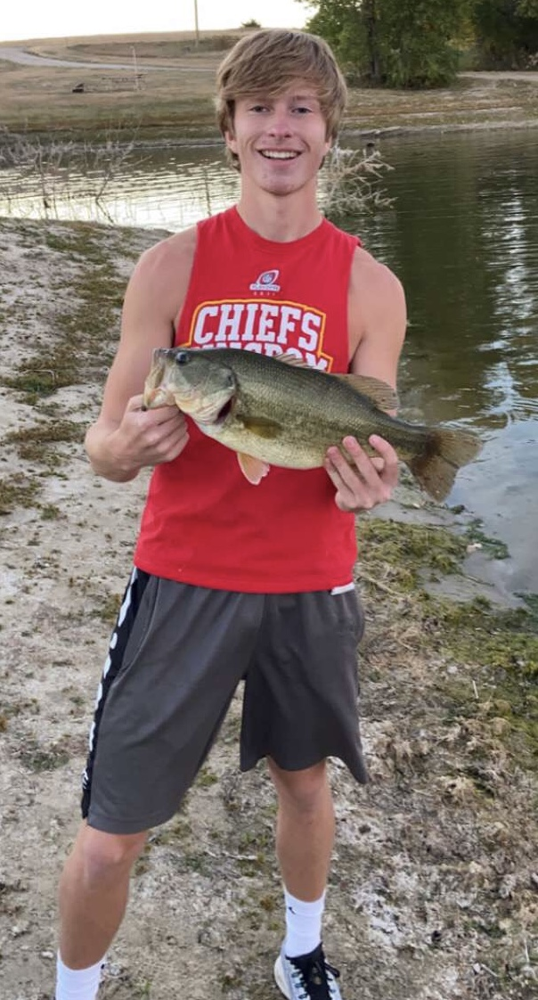

Fishing is something I started when I was very young. My Grandfather took me out many times to farm ponds and other bodies of water to teach me the ways and it was also a way to bond. I lost touch with the hobby while growing up, but back in 2020 during the global pandemic I was able to rekindle my love for the sport and become exceptionally good at fishing for game.
The hobby of fishing is sometimes an acquired taste. Some people will just never understand the exhilarating feeling when a fish attacks your bait and you have to set the hook. After setting the hook, the fun begins. At this point your blood is filled with adrenaline and you are fighting the fish with all your might just praying that she stays hooked on your line. It is all worth it in the end when it is on the shore and you are able to hold it up for a nice photo or able to put it on ice to enjoy during a meal at a later time.
Using my knowledge I have gained over the years and my passion for the sport I was able to begin sharing my experience with others. I started giving advice and showing people hot spots for catching larger fish. I took my passion for fishing and turned it into a way to impact others and also make a living off of what I love. Being a fishing guide has and always will be a dream of mine and I am hoping that you are interested in seeing what I can bring for you, your family, and your friends with a guided excursion to catch large fish in the area of Kansas.